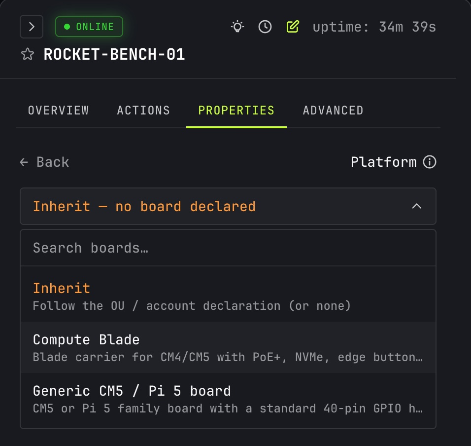
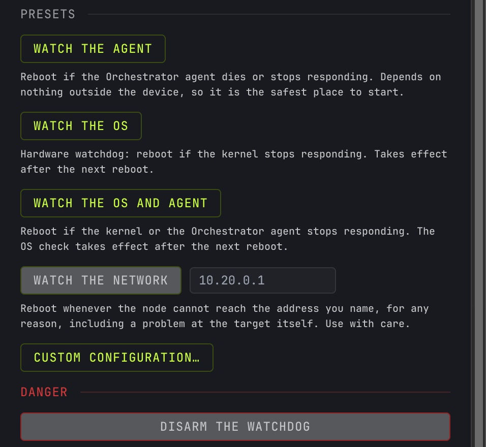

Hardware profiles, overclocking and the watchdog
Tell the server what hardware a node has, overclock it, and let a hung node reset itself.
Declare a node's hardware, overclock it or arm its watchdog from the node's Properties and Advanced tabs. None of these reboots the node for you.
Tell the server what board and add-ons a node has
The server detects the compute module. It cannot see the carrier board, or a clock or TPM chip that stays invisible until its overlay loads. A hardware profile declares them.

- Open the node and go to Properties → Platform.
- Choose a board. The list shows only boards that fit the detected module, and Inherit follows the unit or account.
- Pick the Variant and any Modules.
- Click Apply. The confirmation shows the block that will be written into config.txt.
- Click Reboot.
- Click Scan.
After the scan, confirmed or works means the hardware answers. not found means a wrong variant, a module not seated, or no reboot since the apply. A wrong declaration does no harm, and modules that clash on pins, I2C address or bus are refused when you save.
An apply to an offline node waits until the node connects on its installed OS. Scan is refused while the node runs the recovery system.
To declare hardware for a whole unit, use the Hardware section of its policies and click Apply hardware profile to N nodes (Organizational units and policies).
Overclock a node

- Open Advanced → Overclock.
- Select Stock, Balanced or Performance.
- Click Apply (for example Apply balanced preset).
- Reboot the node.
Nothing changes until the reboot. An offline node gets the change when it reconnects. Apply preset stays disabled until you select a preset.
On a Pi 5 or CM5, Balanced is 2.6 GHz at stock voltage and Performance 2.8 GHz. On a Pi 4 or CM4 they are 1.8 and 2.0 GHz. Stock removes the overclock. No preset uses force_turbo, so the board still slows down when idle or hot. Check the cooling before you use Performance.
Let a hung node reset itself
The watchdog reboots the node when a check you choose fails. A new node has none armed.

- Open Advanced → Watchdog.
- Pick a preset. Watch the agent is the safest start.
- Click Arm this configuration and confirm.
Watch the OS reboots on a kernel hang and takes effect after the next reboot. Watch the network reboots when the address you type stops answering. Custom configuration… lets you set every check yourself.
The device refuses a configuration that would reboot it straight away, such as an unreachable ping target, and the panel shows "Device refused to arm: …". Disarm the watchdog stops supervision. A unit's Watchdog policy arms nothing until you click Arm the inherited configuration on each node.
If a node restarts three times, each within 20 minutes of the last boot, it disarms its own watchdog. The node list then shows WATCHDOG OFF. Find out why it kept restarting, then click Re-arm.
Don't arm it:
- during a long package upgrade, because arming installs the
watchdogpackage with apt and fails while apt is busy. - with Watch the network pointed at something you don't control. An outage there reboots every node watching it.
- with Watch the OS while a kernel or firmware update is pending, unless you reboot once and watch the node come back before you leave it.
Turn the LEDs off
Properties → LEDs turns off the activity and power LEDs, and on a Compute Blade adds Stealth mode and Digital LED indication. The settings do not apply in the recovery system, and identify is on the node's Actions tab (Working with a node).
Next: Organizational units and policies, to set these once for a whole unit.